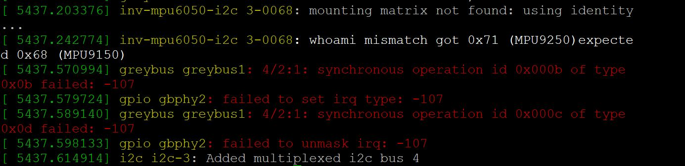

MPU9DOF Click Support
This post contains the information about setting up and interfacing the MikroElektronika MPU9DOF Click with PocketBeagle and Beaglebone Black, This post assumes that GBSIM is correctly installed and setup in your board.MPU 9DOF click carries the MPU–9250 System in Package, which is the world’s first 9-axis Motion Tracking device. MPU–9250 comprises two chips. One is the MPU–6050 that contains a 3-axis accelerometer, a 3-axis gyroscope, and a DMP (digital motion processor); the other is AK8975, a 3-axis digital compass. It is designed for the low power, low cost, and high-performance requirements of consumer electronics equipment and wearable sensors.
Start GBSIM
Before inserting the click manifest start gbsim wither using the start script or by separately modprobe the modules and running gbsim.
sudo sh startgbsim.shInsert the Click Manifest using the CLI
Clone and setup the insclick CLI along with the manifesto tool and create the manifest blobs
git clone https://github.com/vaishnav98/manifesto.git
cd manifesto
./manifesto -o manifests/i2c1.mnfb manifests/i2c1.mnfs
./manifesto -o manifests/gpio.mnfb manifests/gpio.mnfs
./manifesto -o manifests/i2c2.mnfb manifests/i2c2.mnfs
sudo cp manifests/i2c1.mnfb /tmp/gbsim/hotplug-module/
sudo cp manifests/gpio.mnfb /tmp/gbsim/hotplug-module/Clone and Compile the Mikrobus Kernel Module
Clone and setup the Mikrobus Kernel Module , connect the click to the corresponding slot and instantiate the mpu9dof click on the greybus i2c bus
git clone https://github.com/vaishnav98/mikrobus_device.git
cd mikrobus_device
make -C /usr/src/linux-headers-4.14.108-ti-r108/ M=$PWD
sudo insmod mikrobus.ko
sudo insmod mikrobus_i2c_device.ko name=mpu9dof port=PBP1Output
The dmesg log output should be similar to this: A new device will be created at /sys/bus/iio/devices/ if the click was loaded correctly, the imu readings can be read using the following commands:
cat /sys/bus/iio/devices/iio\:device1/in_accel_x_raw
cat /sys/bus/iio/devices/iio\:device1/in_accel_y_raw
cat /sys/bus/iio/devices/iio\:device1/in_accel_z_raw
cat /sys/bus/iio/devices/iio\:device1/in_anglvel_x_raw
cat /sys/bus/iio/devices/iio\:device1/in_anglvel_y_raw
cat /sys/bus/iio/devices/iio\:device1/in_anglvel_z_raw
cat /sys/bus/iio/devices/iio\:device1/in_temp_raw